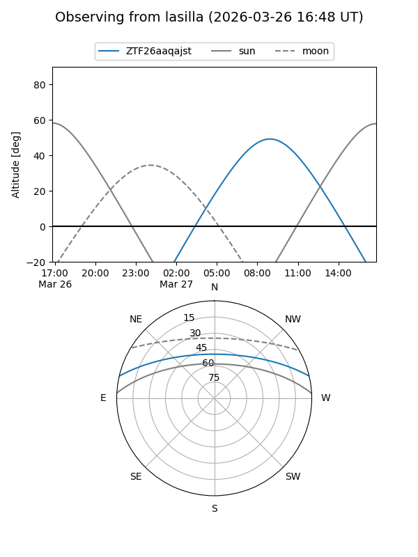
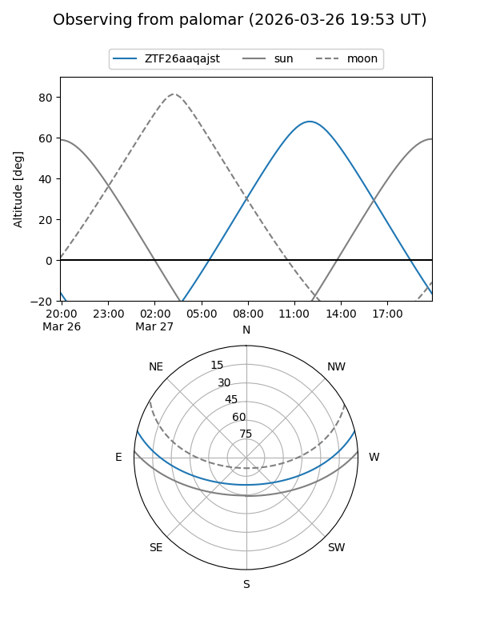

ZTF26aaqajst
Target ZTF26aaqajst at 2026-03-26 13:01
Aliases and brokers:
FINK: link
Lasair: link
ALeRCE: link
alt names
ZTF26aaqajst (ztf,fink_ztf)
Coordinates:
equatorial (ra, dec) = 247.7265,+11.50044
equatorial (HMS+DMS) = 16:30:54.37,+11:30:01.57
galactic (l, b) = (27.2527,+36.35565)
Flags:
Photometry:
last ztfg=19.57
1 ztfg detections
Lightcurve
Visibility


Additional plots